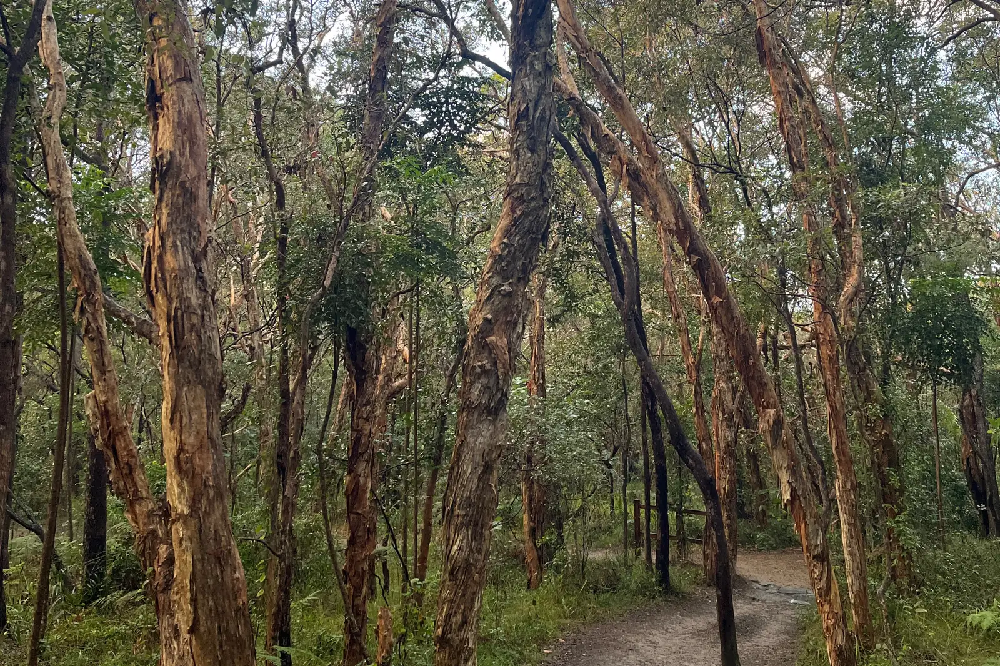

Reading the Country
Learn to read the Sunshine Coast
From the reef to the range. One rule lines up the whole coast — and once you can see it, you never look at a hillside the same way again.
A free companion to the book. Follow the seasons by email →
Reef → Range · QLD